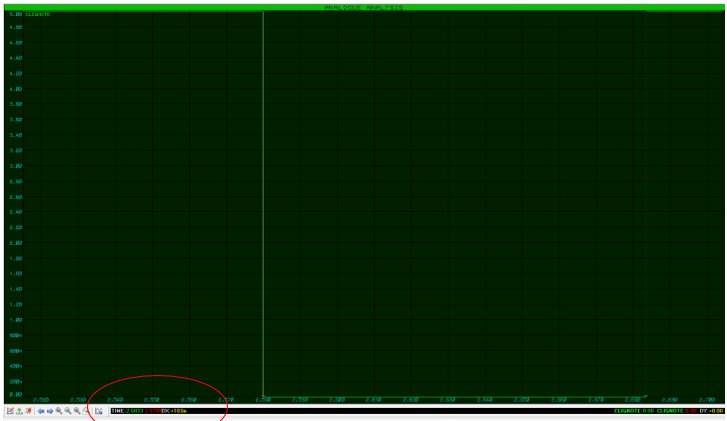
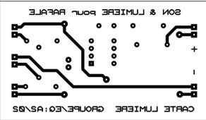
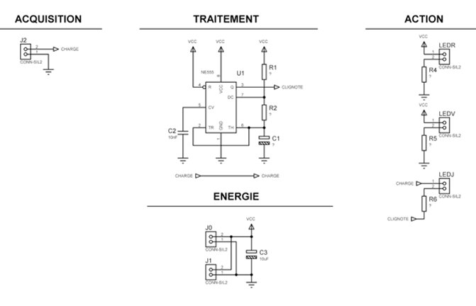
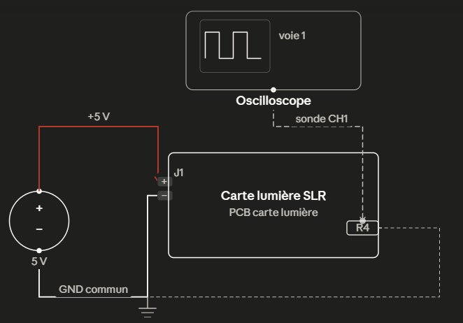
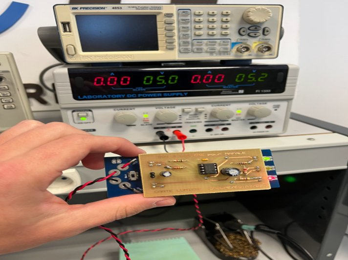
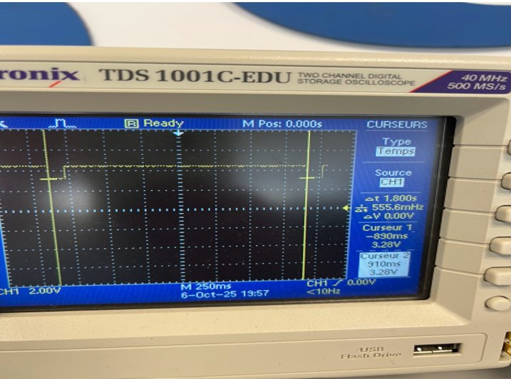
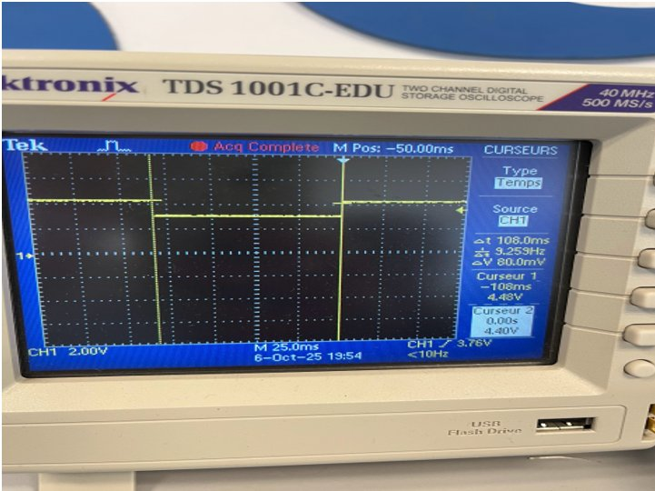

Système Sonore
et Lumineux
Conception et vérification d'un système électronique sonore et lumineux embarqué sur un planeur Rafale miniature — IUT GEII Bordeaux
Le projet
Présentation
Dans le cadre de la SAÉ de première année de BUT GEII, j'ai conçu et vérifié un système sonore et lumineux destiné à équiper un planeur Rafale miniature lancé à la main lors de sessions d'aéromodélisme en soirée, commandé par le client fictif Toy Corporation. L'objectif était de rendre le planeur visible et sonore — trois voyants lumineux (rouge, vert et jaune clignotant) et un buzzer reproduisant un bruit pseudo-aléatoire modulé par la tension d'alimentation.
Le produit se compose de deux cartes électroniques superposées : une carte son (95 × 40 mm, coût ~15,85 € TTC) intégrant un microcontrôleur ATtiny45V, un super-condensateur 1F/5,4V comme source d'énergie, une référence de tension LM385BZ-1.2 et un buzzer piézoélectrique ; et une carte lumière (70 × 40 mm) dont j'ai assuré la conception, avec un NE555P en astable pilotant la LED jaune (période 1,9 s, temps actif 0,1 s) et deux résistances pour les LED rouge et verte à allumage permanent.

Fig. 1 (DDC) — Architecture fonctionnelle du système sonore et lumineux : carte son (énergie, acquisition, traitement, action sonore) et carte lumière (traitement clignotement, action LED)
Phase 1
Ce que j'ai fait — Conception
J'ai pris en charge les paragraphes CDT_CLIGNOTE de la carte lumière, ainsi que la rédaction des sections correspondantes du DDC. Mon travail a débuté par la lecture du CDC : l'exigence EXIG_CLIGNOTE impose une période de 1,9 s (±20 %) et un temps actif de 0,1 s (±20 %). Le bloc de traitement retenu en conception préliminaire est un NE555P en montage astable avec logique négative.
- Solutions proposées pour le Traitement : J'ai choisi d'utiliser le circuit intégré NE555P configuré en oscillateur astable. Pour répondre à la contrainte d'un temps actif très court (0,1 s) face à une période longue (1,9 s), j'ai implémenté une logique négative : la LED est connectée entre la sortie du timer et le +VCC. Ainsi, l'allumage correspond au temps bas de la sortie, ce qui permet de dissocier mathématiquement le rapport cyclique des constantes de temps classiques du 555.
- Solutions proposées pour l'Action : J'ai conçu un étage de puissance simple composé de résistances de limitation calculées pour chaque couleur. Pour la LED jaune clignotante, la valeur de R4 (4,7 kΩ) a été dimensionnée pour limiter le courant à 10 mA lors de l'état bas du NE555, garantissant ainsi une intensité lumineuse cible de 500 mCd tout en protégeant les sorties du circuit contre une surcharge.
C'est à travers ces choix techniques que j'ai développé les compétences suivantes.
J'identifie les fonctions demandées à la lecture du cahier des charges
J'ai décomposé le besoin de la carte lumière en deux fonctions distinctes : le traitement du clignotement (NE555P en astable, signal « Clignote » de période 1,9 s et temps actif 0,1 s) et l'action sur les trois LEDs (allumage permanent pour le rouge et le vert, allumage commandé par le signal « Clignote » pour le jaune). Cette décomposition m'a permis d'identifier que la contrainte d'un temps actif très court (0,1 s) face à une période longue (1,9 s) imposait une logique négative : la LED jaune est câblée entre le +VCC et la sortie du NE555, de sorte que l'allumage correspond au temps bas de la sortie.

DDC — Schéma électrique préliminaire du NE555P en astable : broche 3 = signal « Clignote » en logique négative, LED jaune MCL034SYC câblée entre +VCC et la sortie pour l'allumage au temps bas
Je propose une solution technique pour répondre à une fonction
Pour le bloc Traitement, j'ai calculé les valeurs de Ra, Rb et C à partir des deux formules de la datasheet NE555 : T = 0,693(Ra + 2Rb)C et TL = 0,693·Rb·C. En partant de C = 100 µF — les valeurs 1 µF et 10 µF conduisant à Rb > 100 kΩ — j'ai obtenu Rb = 1 443 Ω et Ra = 24 540 Ω, normalisés à Ra = 22 kΩ et Rb = 1,5 kΩ série E6 (tolérance ±20 % autorisée). Pour le bloc Action, j'ai dimensionné R4 (4 700 Ω, LED jaune) et R5/R6 (1 000 Ω et 2 200 Ω, LEDs rouge et verte) à partir des courbes If/Iv des datasheets pour atteindre 500 mCd ±50 % sur chaque voyant.

DDC — Tableau de calcul des valeurs Ra, Rb, C du NE555P astable : T = 0,693(Ra + 2Rb)C, TL = 0,693·Rb·C — normalisation série E6 vers Ra = 22 kΩ, Rb = 1,5 kΩ, C = 100 µF

DDC — Chronogramme cible du signal « Clignote » : T = 1,9 s, TL = 0,1 s, rapport cyclique ≈ 5 %, en logique négative sur la broche 3 du NE555P
J'affine une solution technique en m'appuyant sur un maquettage numérique et/ou matériel
Afin de valider les valeurs normalisées avant toute gravure, j'ai simulé le montage NE555P astable sous ISIS en renseignant Ra = 22 kΩ, Rb = 1,5 kΩ et C = 100 µF. Les chronogrammes obtenus donnent T = 1,73 s et TL = 103 ms. J'ai calculé les écarts relatifs par rapport aux valeurs cibles du cahier des charges (1,9 s et 0,1 s) : −8,8 % pour la période et +3,0 % pour le temps actif, tous deux dans la fenêtre de tolérance ±20 %. La simulation confirme que le jeu de valeurs normalisées retenu est conforme avant tout perçage.

DDC — Simulation ISIS : chronogramme de la période (T = 1,73 s mesuré, écart −8,8 % / CDC)

DDC — Simulation ISIS : chronogramme du temps d'allumage (TL = 103 ms mesuré, écart +3,0 % / CDC)
Je rédige un dossier de conception et de fabrication
J'ai rédigé le paragraphe CDT_CLIGNOTE du DDC : démarche de calcul de Ra, Rb et C, normalisation série E6, simulation ISIS et conclusion de conformité, en respectant la structure documentaire imposée : rédacteur/relecteur, figures numérotées, référencement des exigences. J'ai également contribué au DDF de la carte lumière en fournissant le schéma électrique complet, la nomenclature, les typons top/bottom, le plan de perçage et le schéma d'implantation.

DDF — Typon top (avec effet miroir) de la carte lumière : 70 × 40 mm, THD, NE555P + 3 LED + 5 résistances + 3 condensateurs

DDF — Schéma électrique complet de la carte lumière avec nomenclature (R1 = 22 kΩ, R2 = 1,5 kΩ, R4 = 4,7 kΩ, R5 = 1 kΩ, R6 = 2,2 kΩ, C1 = 100 µF, C2 = 10 nF, C3 = 10 µF, U1 = NE555)
Phase 2
Ce que j'ai fait — Vérification
J'ai rédigé et réalisé l'essai ESS_CLIGNOTE sur la carte lumière assemblée. Le banc de test est alimenté par un générateur réglé à 5 V. J'ai relié la sonde oscilloscope pour mesurer le signal « Clignote ». La mesure donne T = 1,8 s (écart −5,3 %, conforme ±20 %) et TL = 108 ms (écart +8 %, conforme ±20 %).
- Vérification de l'étage de clignotement : À l'aide d'un oscilloscope numérique, j'ai caractérisé le signal de sortie du NE555P sous une alimentation stabilisée de 5 V. Les mesures de période (1,8 s) et de temps actif (108 ms) confirment que le montage est parfaitement opérationnel et respecte les tolérances de ±20 % exigées par le cahier des charges.
- Qualification des intensités lumineuses : J'ai mesuré la tension aux bornes des résistances de limitation pour chaque LED. Par l'application de la loi d'Ohm et des données constructeurs, j'ai vérifié que l'intensité lumineuse réelle se situe dans la plage de 500 mCd ±50 %, validant l'EXIG_INTENSITES pour les trois voyants.
La conduite de ces essais m'a amené à travailler les compétences suivantes.
J'applique, j'élabore, je rédige une procédure d'essais
J'ai rédigé et appliqué le protocole ESS_CLIGNOTE : but de l'essai, moyens (banc carte lumière, alimentation de table réglée à 5 V, oscilloscope), procédure numérotée (installation sur banc, positionnement de la sonde sur la piste de R4, réglage à 250 ms/div pour la période et 25 ms/div pour le temps actif, placement des curseurs), résultats attendus avec tolérance. Les mesures donnent T = 1,8 s (écart −5,3 %, conforme ±20 %) et TL = 108 ms (écart +8,0 %, conforme ±20 %).

DDV — Schéma de câblage ESS_CLIGNOTE : alimentation de table 5 V → banc carte lumière, sonde oscilloscope positionnée sur la piste de R4 (résistance de limitation LED jaune)

DDV — Photo du montage ESS_CLIGNOTE : carte lumière assemblée sur banc de test, alimentation 5 V connectée, oscilloscope en position de mesure
J'identifie, je corrige les non-conformités d'un prototype
Lors de l'assemblage de la carte lumière, j'ai identifié deux non-conformités : une soudure débordante créant un court-circuit avec le plan de masse, corrigée par refusion, et un NE555P monté à l'envers, corrigé par remplacement du composant. J'ai dans les deux cas documenté la cause et appliqué la solution corrective avant de procéder aux essais, obtenant une conformité totale sur l'ensemble des mesures finales.

DDV — Oscilloscope ESS_CLIGNOTE : mesure de la période T = 1,8 s à 250 ms/div (écart −5,3 % / 1,9 s cible, conforme ±20 %)

DDV — Oscilloscope ESS_CLIGNOTE : mesure du temps actif TL = 108 ms à 25 ms/div (écart +8,0 % / 0,1 s cible, conforme ±20 %)
Matrice de conformité
Livrables